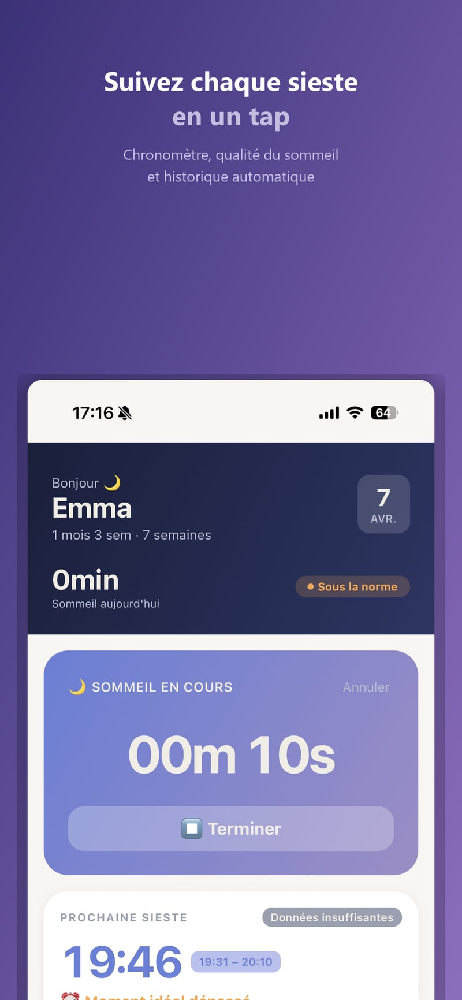
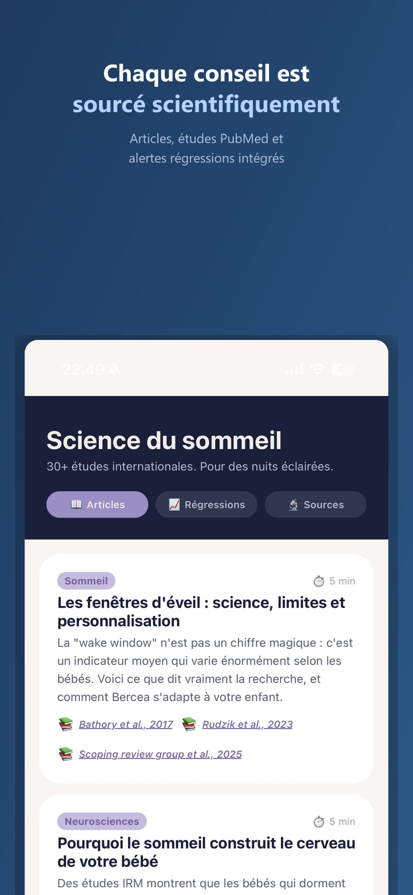
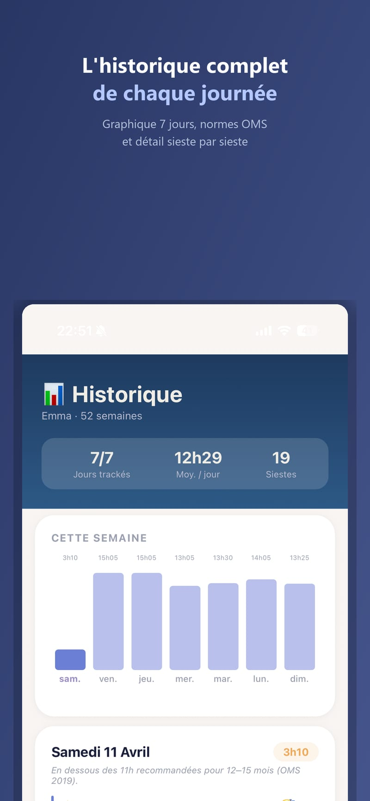
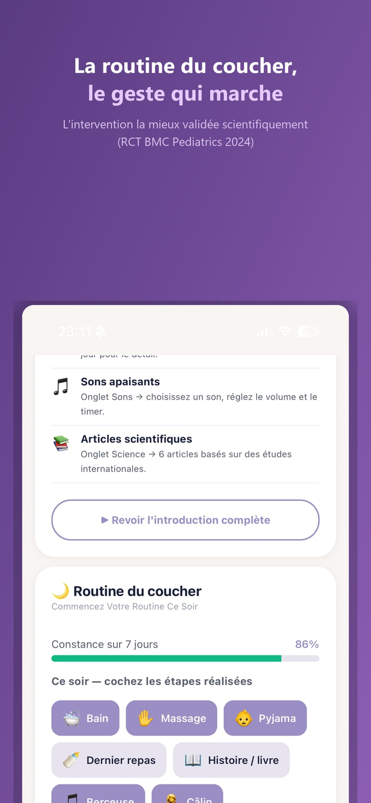

Bercea au quotidien
Une app pensée pour répondre aux vraies questions des parents, simplement, sans compte à créer.
Chrono de sommeil intelligent
Bercea démarre un chrono dès le réveil et vous alerte avant la fin de la fenêtre d'éveil. Plus besoin de regarder l'horloge toutes les cinq minutes.
- Démarrage en un tap
- Alerte avant le point de fatigue
- Historique des siestes sur 7 jours

Un modèle qui apprend votre bébé
Les premières prédictions s'appuient sur les moyennes scientifiques par âge (OMS, AASM). Puis, sieste après sieste, l'app affine progressivement les fenêtres d'éveil au rythme réel de votre enfant, jusqu'à 70 % de données personnelles après un mois de suivi.
- Combine données scientifiques et observations personnelles
- S'adapte aux transitions développementales
- Tient compte du rythme jour/nuit à partir de 12 semaines
- Détecte le manque de sommeil et les micro-siestes

10 sons pour endormir en quelques minutes
Du bruit blanc au chant des baleines, chaque son a été choisi pour son effet apaisant documenté. Lecture en arrière-plan et protection auditive incluses.
- Bruit blanc, rose, utérin, pluie, océan…
- Lecture en arrière-plan
- Minuterie intégrée
- Alerte au-delà de 50 dB

Un parent apaisé pour un bébé serein
Bercea suit aussi votre humeur, votre énergie et votre sommeil. Si les signaux s'accumulent, l'app vous oriente vers les bonnes ressources, sans jugement.
- Suivi quotidien rapide
- Alertes bienveillantes
- Ressources externes validées

Les études, à portée de tap
Chaque recommandation est reliée à sa source scientifique. Bercea ne vous dit pas seulement quoi faire : il vous explique pourquoi. Les contenus intègrent les dernières découvertes scientifiques (2024-2025).
- Plus de 35 études scientifiques citées
- Articles mis à jour avec la recherche récente
- Fiches pédagogiques par thème

Chaque sieste, chaque nuit, en un coup d'œil
Graphique hebdomadaire, moyenne journalière, écart à la norme OMS/AASM pour l'âge exact, et détail sieste par sieste. Vous voyez les tendances sur 7 jours, pas juste la nuit d'hier.
- Graphique 7 jours interactif
- Comparaison norme OMS / AASM
- Détail de chaque sieste (qualité, durée)
- Correction d'une entrée par simple tap

La seule intervention vraiment prouvée
Parmi toutes les pratiques de sommeil, une seule a des preuves scientifiques solides : la routine du coucher constante. Une étude clinique de 2024 portant sur 306 nourrissons montre un gain significatif de sommeil nocturne chez les bébés avec routine par rapport à ceux sans.
- Check-list personnalisable : bain, massage, histoire…
- Barre de constance sur 7 jours
- Compteur de streak (jours consécutifs)
- Aucun jugement — l'objectif est la constance, pas la perfection
